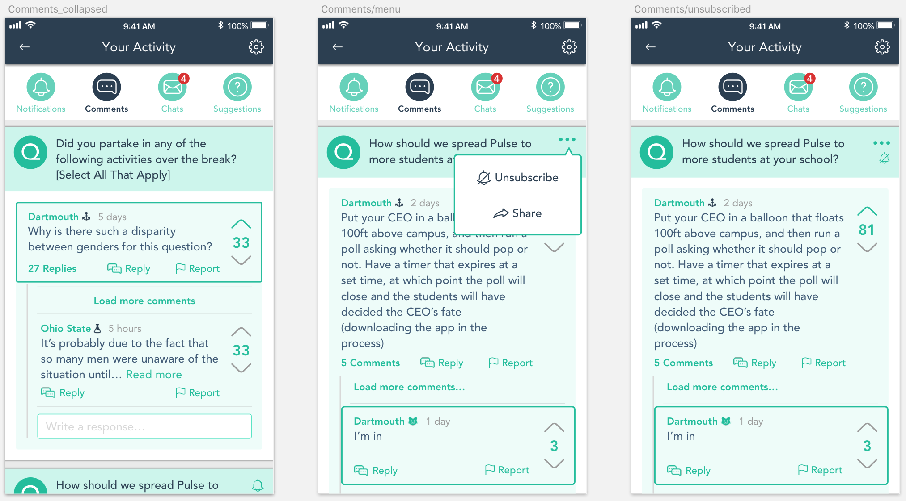
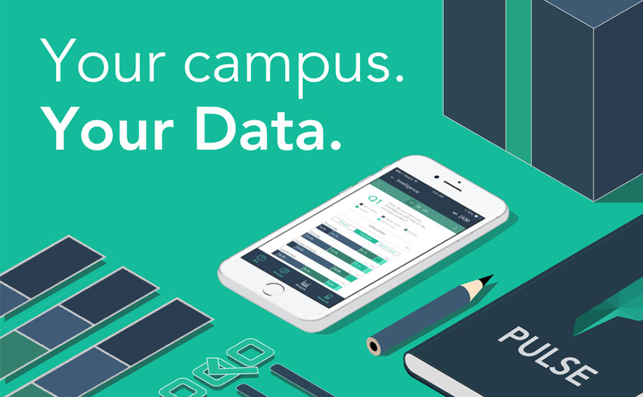
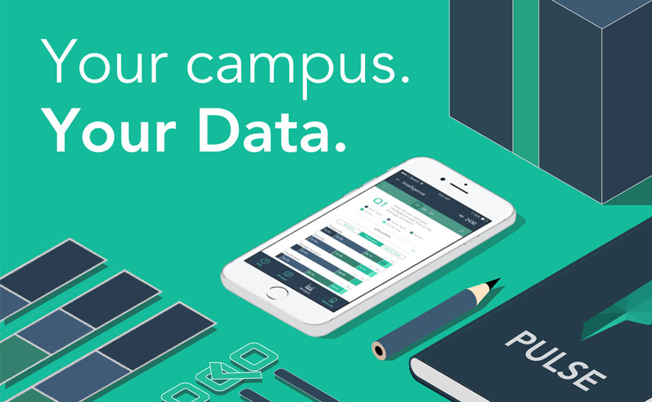

Jenny Hyun Ji Seong
Art. Design. Code.
Data Feed & Activity Feed
Pulse is a “social” polling platform. Pulse provides a place where users can discover what other students think about topics not usually discussed with a big group, including the controversial ones. As we grew our user base, more and more discussions took place, sometimes going on through dozens of comments on a single thread.
Initially, we limited access to data other than from polls and questions a user already participated in. But soon, it became clear to us that the rich, user-generated content was reaching only those that were invested in checking the results.
For the first-time user, it was often very hard to come across the best discussions and witty comments. For the discussion participators, it was hard to keep track of the conversations they were having just through push notifications. Thus, we needed to design a better way to present the increasing amount of user-generated data.
Converting Data Explorer into Data Feed
Design Goals
To help the best content reach the most users as possible, we decided to create a data feed where user-generated content could be featured. A few key purposes of the feed were:
One of the very first attempts we made to address the second point (provide content easier to digest) was through “daily cards”: a little section at the top of polls to show interesting insights from existing poll data. We discovered that the daily cards were getting a lot of attention and decided to extend on the idea through a data feed.
Iterations
A typical feed is created by the users “following” certain topics or people. This is possible for social platforms that have a lot of content constantly being generated by users, which is not the case with Pulse. Instead of a personalized feed, Pulse had to create a centralized hub for the best content to be featured, like a newspaper homepage.
As a polling platform, Pulse has different question types (multiple choice, open answer etc.) that render differently according to their type. The data feed needed to able to encompass different kinds of “posts,” such as:
Since these “posts” are so different from each other, I first envisioned a dashboard-like homepage with different sections for different types. But this hindered the infinitely scrollable characteristic that makes feeds so engaging.
Although the nature of the feed is a little different, I wanted to create a design that imitates that of popular social applications. After looking at multiple social media apps, I found some common elements that composed a “post," such as an avatar, content etc. Using these elements and integrating them with the existing layouts, I created a potential feed design.
After the first version of the feed was launched, we could definitely see an increase in user engagement. But instead of actually taking the polls, people were answering the questions through the comments.
To make sure that all possible actions are covered, I created a map of possible actions that could take place initiated from a feed post. Based on this, I tried to improve the feed using these points:
Moving Forward
In the early days of Pulse, we created topic-based polls with multiple questions regarding the same topic within a poll. As we expanded and users demanded to see more polls every day, we started publishing polls with 5 top questions that were voted on, rather than organizing them by topic.
With the points system and the poll format already in place, it was difficult to significantly change the main functionality of the app. But now that most questions are standalone and do not need to be placed in context, it may be possible to create a better user experience by implementing a question feed, providing one question at a time.
Activity Feed
Design Goals
To facilitate the actions of the contributors, I also designed an activity hub in which people could easily keep track of their activity and content.
This feature was actually built based on common suggestions we got from users. Some users wanted to keep track of how many votes their question suggestions were getting. Some users wanted a shortcut to access lengthy discussions they were having on a question. Some users even suggested that they be able to extend those discussions through a private chat.
Iterations
Working with the existing design, the most logical place to put an activity feed seemed to be where notifications originally were. Pulse was already sending push notifications regarding the topics mentioned above. But the original notification designs made it hard to distinguish previous notifications from new notifications.
Using this spot meant that the new designs needed to provide a way to access some of features that were originally in the same spot as well. Thus, the activity feed needed to cover:
I decided to break down the activity into four tabs: Notifications, Comments, Messages, and Suggestions (from the Ask section). The other less frequent features, such as signing out and reporting an issue, could be put into a settings menu.
Enabling a chat feature was the most challenging part of this task. In order to initiate a private message, you need to have a target. Comments in Pulse are anonymous except with an indication of which campus the poster is from. How could a chat begin in such a situation?
Then I realized that users would send a private message only after seeing an initial comment. This meant that sending a message was just another method of responding to a comment. By adding an option to reply privately, a private conversation could be initiated.
And of course, can't forget to add a little delight to the empty states!
I envision the little flag next to the mailbox swiveling down once the user is done reading all the notifications.
Moving Forward
The activity feed is still in development, and I still have questions that have yet to be tested. Is the extent of content being covered be enough or excessive? Will having a chat feature catalyze or hinder discussions?
Notes
While I was designing the activity feed, I stumbled upon the idea of “levels” for the users. We currently have a streak system built for answering polls, but there is no incentive for users who pursue further actions. By integrating an incentive system into the feeds, Pulse may be able to appeal to more users.
Interested in other College Pulse projects?
Check out these pages!
 
